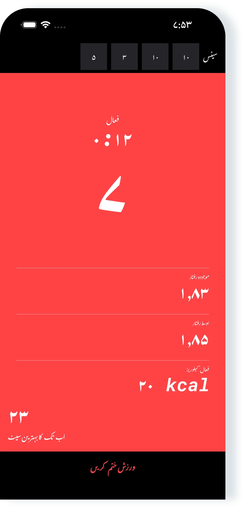
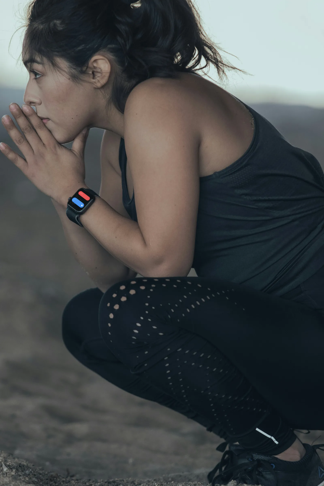

کمال کی ایپ
“مجھے یہ ایپ واقعی پسند ہے۔ اس کی سادگی ہی اسے بہترین بناتی ہے!”
iPhone، iPad اور Apple Watch کے لیے پش اپ کی تربیت
پروگرام پر عمل کریں یا آزادانہ تربیت کریں۔ Pushanova آپ کے پش اپ iPhone، iPad اور Apple Watch پر گنتا ہے۔
شروع کرنا مفت ہے۔ اکاؤنٹ نہیں۔ اشتہارات نہیں۔

پروگرام میں ۵۰ لیول ہیں۔ کسی بھی لیول سے شروع کریں، یا آزادانہ تربیت کرکے اپنے سیٹ خود منتخب کریں۔ آپ کارڈیو یا طاقت کی تربیت کے دوران پش اپ کے سیٹ بھی ریکارڈ کر سکتے ہیں۔
Pushanova روزانہ یا ہفتہ وار شیڈول لازم نہیں کرتا۔ آپ کسی لیول کو دہرا سکتے ہیں اور آرام کے دن لے سکتے ہیں، وقفہ لینے پر کوئی سزا نہیں۔

اپنا iPhone یا iPad فرش پر رکھیں، یا Apple Watch پر شروع کریں۔ مختصر الٹی گنتی آپ کو پوزیشن سنبھالنے کا وقت دیتی ہے۔
Pushanova خودکار طور پر آپ کے پش اپ گنتا ہے اور سیٹ، رفتار، وقت اور کیلوریز ریکارڈ کرتا ہے۔ آرام کا دورانیہ آپ طے کرتے ہیں: جلدی جاری رکھیں یا مزید آرام کریں۔
iPhone پاس نہ ہو تب بھی Apple Watch پر ورک آؤٹ شروع اور مکمل کریں۔ دونوں کو ساتھ استعمال کرنے پر Apple Watch پش اپ گنتی ہے جبکہ iPhone وہی ورک آؤٹ دکھاتا ہے۔
Pushanova ہر مکمل ورک آؤٹ محفوظ کرتا ہے۔ آپ کی ہسٹری دکھاتی ہے کہ وقت کے ساتھ تربیت کیسے بدلتی ہے۔

“مجھے یہ ایپ واقعی پسند ہے۔ اس کی سادگی ہی اسے بہترین بناتی ہے!”
“یہ بہت اچھی ہے۔ یہ مجھے زیادہ پش اپ کرنے میں مدد دیتی ہے اور مسلسل بہتر ہونے کی ترغیب دیتی ہے۔”
“اب میں بہت زیادہ پش اپ کر سکتا ہوں! یہ ہمارے ۱۳ سالہ بیٹے نے لکھا ہے، جسے اس ایپ سے بہت حوصلہ ملا ہے۔”
“مجھے یہ ایپ بہت پسند ہے۔ حال ہی میں میں نے یہ دیکھنے کا فیصلہ کیا کہ میں کتنی جلدی ۱۰۰ پش اپ تک پہنچ سکتا ہوں۔ مجھے کوئی ایسی مناسب قیمت والی ایپ نہیں مل رہی تھی جو اسے آسان بنائے، یہاں تک کہ یہ ایپ مل گئی۔ مجھے اس ایپ کا صاف ستھرا انداز بہت پسند ہے۔ ڈویلپر بھی رائے کا بہت جلد جواب دیتا ہے۔”
App Store کے جائزوں میں طوالت اور وضاحت کے لیے معمولی تدوین کی گئی ہے۔
iPhone اور iPad پر پش اپ ٹریکنگ تصاویر نہیں لیتی اور ویڈیو کو ریکارڈ، محفوظ یا اپ لوڈ نہیں کرتی۔ Pushanova آپ کی شناخت کے لیے کیمرہ استعمال نہیں کرتا۔
Pushanova اکاؤنٹ لازم نہیں کرتا، آپ کا ڈیٹا فروخت نہیں کرتا اور اس میں اشتہارات نہیں ہیں۔ مطابقت پذیری فعال ہو تو ورک آؤٹ ڈیٹا آپ کے آلات اور ذاتی iCloud اکاؤنٹ میں رہتا ہے۔ آپ کی اجازت سے مکمل ورک آؤٹس Apple Health میں محفوظ کیے جا سکتے ہیں۔
اگر Pushanova بند ہو جائے یا اس میں خلل پڑے تو جاری ورک آؤٹ بحال کیا جا سکتا ہے۔
نہیں۔ Pushanova iPhone یا iPad سے پش اپ ٹریک کر سکتا ہے۔ Apple Watch کلائی سے ٹریکنگ شامل کرتی ہے اور بینچ یا افقی بار پر بلند پش اپ کی سہولت دیتی ہے۔
ہاں۔ iPhone پاس نہ ہو تب بھی آپ Apple Watch پر ورک آؤٹ شروع اور مکمل کر سکتے ہیں۔ Watch ایپ کی توجہ ورک آؤٹس پر ہے۔ ورک آؤٹ ہسٹری اور تجزیات iPhone اور iPad پر دستیاب ہیں۔
Apple Watch اور iPhone کو ساتھ استعمال کرنے پر Apple Watch آپ کے پش اپ ٹریک کر سکتی ہے جبکہ iPhone مطابقت پذیر ورک آؤٹ دکھاتا ہے۔
iPhone اور iPad پر سامنے والا کیمرہ آپ کے چہرے اور آلے کے درمیان فاصلے میں تبدیلی ناپتا ہے۔ Apple Watch پر Pushanova آپ کی کلائی کی حرکت کا تجزیہ کرتا ہے۔ آپ ایک ایسی ترتیب بھی فعال کر سکتے ہیں جو اسکرین پر ہر بار ٹیپ کرنے سے ایک پش اپ گنتی ہے۔
ہاں۔ کیمرے کی رسائی دستیاب نہ ہو تو Pushanova iPhone پر آلے میں موجود ایک اور سینسر استعمال کر سکتا ہے۔ iPhone اور iPad دونوں پر آپ اسکرین ٹیپ کرکے گنتی فعال کر سکتے ہیں۔ Apple Watch کیمرہ استعمال نہیں کرتی۔
نہیں۔ خودکار گنتی تصاویر نہیں لیتی اور ویڈیو کو ریکارڈ، محفوظ یا اپ لوڈ نہیں کرتی۔ کیمرہ صرف فاصلہ ناپتا ہے، اور Pushanova اسے آپ کی شناخت کے لیے استعمال نہیں کرتا۔
iPhone اور iPad فرش پر عام پش اپ اور گھٹنوں کے بل پش اپ کی سہولت دیتے ہیں۔ Apple Watch بینچ یا افقی بار پر بلند پش اپ کی سہولت بھی دیتی ہے۔
ایسے متوازی ہینڈلز پر پش اپ کی سہولت نہیں ہے جن پر ہتھیلیاں ایک دوسرے کی طرف ہوں۔ مٹھیوں پر پش اپ کام کر سکتے ہیں، لیکن گنتی کم درست ہو سکتی ہے۔
کوئی بھی خودکار ٹریکنگ طریقہ ہر حرکت کو درست نہیں گن سکتا۔ آلے کی جگہ، انداز اور رفتار نتیجے کو متاثر کر سکتے ہیں۔ ورک آؤٹ کے بعد آپ ہر موجودہ سیٹ میں پش اپ کی تعداد درست کر سکتے ہیں۔
آپ ابتدائی لیول سے شروع کر سکتے ہیں، جن میں چھوٹے سیٹ ہوتے ہیں۔ گھٹنوں کے بل پش اپ کی سہولت موجود ہے۔ آپ کسی لیول کو دہرا سکتے ہیں اور اپنی رفتار سے آگے بڑھ سکتے ہیں۔
ہاں۔ آپ کسی بھی لیول سے شروع کر سکتے ہیں یا آزادانہ تربیت کر سکتے ہیں۔ Pushanova کارڈیو یا طاقت کی مشقوں کے دوران پش اپ کے سیٹ ریکارڈ کر سکتا ہے۔
پروگرام کے تین مراحل میں ۵۰ لیول ہیں۔ ہر لیول مقررہ سیٹ اور پش اپ اہداف کے ساتھ ایک منظم ورک آؤٹ ہے۔ آخری لیول ۱۰۰ پش اپ کا ایک سیٹ ہے۔
آپ کسی بھی لیول سے شروع کر سکتے ہیں، کوئی لیول دہرا سکتے ہیں یا دوسرے لیول پر جا سکتے ہیں۔ پہلے ۱۰ لیول مفت ہیں۔ Pushanova Premium لیول ۱۱–۵۰ کھولتا ہے۔
ہاں۔ آپ ایک ورک آؤٹ میں لیول مکمل اور دوسرے میں آزادانہ تربیت کر سکتے ہیں۔ اسی ورک آؤٹ میں لیول مکمل کرنے کے بعد بھی آزادانہ تربیت جاری رکھ سکتے ہیں۔
ہاں۔ Pushanova روزانہ یا ہفتہ وار شیڈول لازم نہیں کرتا۔ آپ لیول دہرا سکتے ہیں، آرام کے دن لے سکتے ہیں اور تیار ہونے پر پروگرام میں واپس آ سکتے ہیں۔
لیول کے ورک آؤٹ میں Pushanova طے شدہ سیٹوں کے درمیان ۹۰ سیکنڈ آرام تجویز کرتا ہے۔ آپ جلدی جاری رکھ سکتے ہیں یا زیادہ دیر آرام کر سکتے ہیں۔ آزادانہ تربیت میں آرام کا کوئی مقررہ ہدف نہیں ہوتا۔
آپ ورک آؤٹ سے پہلے سیٹوں کی پہلے سے طے شدہ ترتیب بنا کر محفوظ نہیں کر سکتے۔ آزادانہ تربیت کے دوران آپ خود طے کرتے ہیں کہ کتنے پش اپ اور سیٹ کرنے ہیں، اور Pushanova ورک آؤٹ ریکارڈ کرتا ہے۔
ہاں۔ آپ کی اجازت سے Pushanova طاقت کی تربیت کے مکمل ورک آؤٹس Apple Health میں محفوظ کرتا ہے، جن میں دورانیہ، فعال کیلوریز اور دستیاب ہونے پر دل کی دھڑکن شامل ہیں۔ پش اپ اور سیٹ کی تعداد Apple Health میں محفوظ نہیں ہوتی۔
Apple Watch پر ورک آؤٹس کے لیے Apple Health کی اجازت درکار ہے۔ iPhone اور iPad پر یہ اختیاری ہے۔
ہاں۔ دل کی دھڑکن ناپنے والا آلہ دستیاب نہ ہو تب بھی Pushanova فعال کیلوریز کا اندازہ لگاتا ہے۔ دل کی دھڑکن Apple Watch، موافق ہارٹ ریٹ ایئربڈز یا Bluetooth ہارٹ ریٹ مانیٹر سے آ سکتی ہے۔
موافق ایئربڈز سے دل کی دھڑکن کی پیمائش کے لیے iPhone پر iOS ۲۶ یا اس کے بعد کا ورژن، یا iPad پر iPadOS ۲۶ یا اس کے بعد کا ورژن درکار ہے۔
ہاں۔ Pushanova ایک مکمل iPad ایپ ہے جس میں خودکار گنتی، ۱۰۰ پش اپ پروگرام، آزادانہ تربیت کا اختیار، ورک آؤٹ ہسٹری، پیش رفت، تجزیات اور Apple Health شامل ہیں۔
ہاں۔ آپ انٹرنیٹ کنکشن کے بغیر ورک آؤٹ شروع اور محفوظ کر سکتے ہیں۔ آلہ دوبارہ آن لائن آنے پر iCloud مطابقت پذیری بحال ہو جاتی ہے۔ App Store خریداریوں کے لیے انٹرنیٹ کنکشن درکار ہے۔
نہیں۔ Pushanova اکاؤنٹ یا رکنیت لازم نہیں کرتا۔ آپ ای میل پتہ دیے یا پاس ورڈ بنائے بغیر ایپ استعمال کر سکتے ہیں۔ Pushanova Premium اختیاری ہے اور App Store سے خریدا جاتا ہے۔
ہاں۔ مفت تربیت میں پہلے سے طے شدہ اہداف کے بغیر لامحدود ورک آؤٹس، پہلے ۱۰ لیول، اور iPhone، iPad اور Apple Watch پر خودکار گنتی شامل ہیں۔ Pushanova میں اشتہارات نہیں ہیں۔
اہل نئے سبسکرائبرز سالانہ سبسکرپشن کو تین دن مفت آزما سکتے ہیں۔ آزمائش ختم ہونے سے پہلے منسوخ نہ کرنے پر سالانہ سبسکرپشن خود بخود شروع ہو جاتی ہے۔ تاحیات خریداری کی کوئی آزمائش نہیں، اور App Store خریدنے سے پہلے قیمت دکھاتا ہے۔
آپ جب تک چاہیں آزادانہ تربیت کر سکتے ہیں۔ پہلے ۱۰ لیول اور خودکار گنتی بھی مفت ہیں۔ iPhone، iPad یا Apple Watch پر ورک آؤٹ شروع کریں۔

اکاؤنٹ نہیں۔ سبسکرپشن ضروری نہیں۔ اشتہارات نہیں۔
